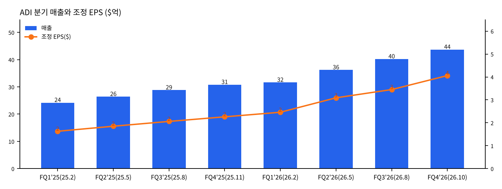
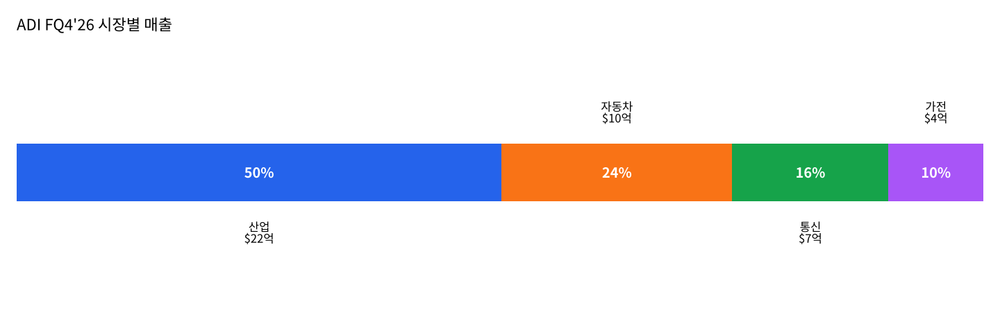
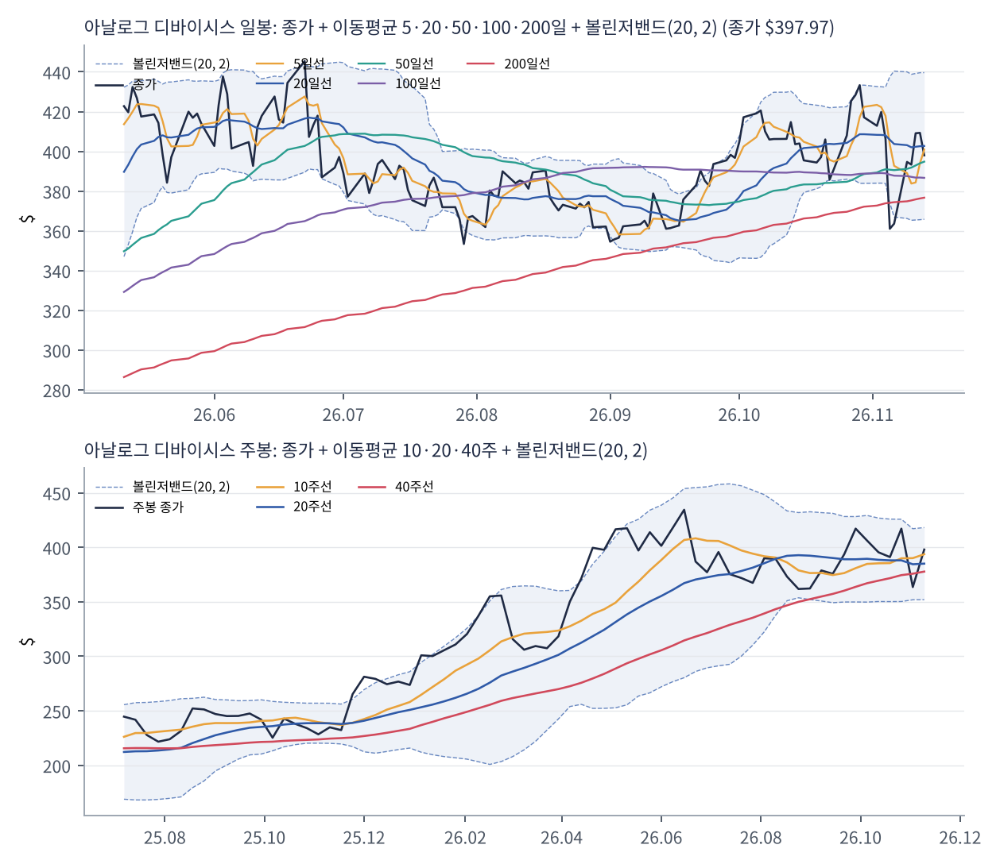
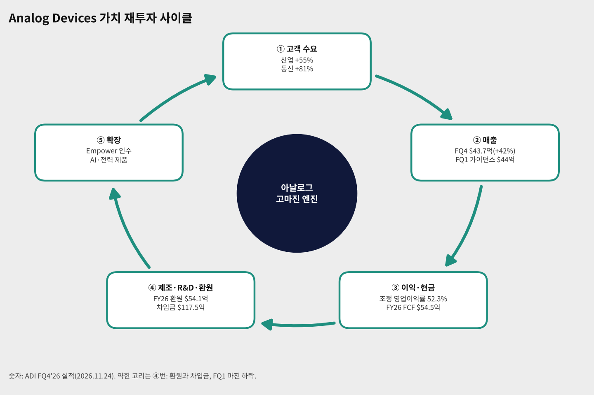

Analog Devices(ADI)는 산업·자동차·통신·가전·데이터센터용 아날로그·혼합신호 반도체를 만드는 회사다. FY26(2026년 11월 종료) 매출이 +38%, 조정 영업이익률이 49.5%인 고마진 회사로, 이번 발표에서 FQ1'27 EPS 가이던스가 FQ4보다 낮게 제시됐다.
| 항목 | 내용 |
|---|---|
| 종목 | Analog Devices (ADI) · NASDAQ · 아날로그·혼합신호 반도체 · 매사추세츠 윌밍턴 |
| 멀티플 | PER 33.0배(TTM, GAAP) · PEG 0.25 · P/S 10.02배 (11/27 스캐너, 종가 $337.31) |
| 최근 분기(FQ4'26) | 매출 $43.73억(+42%), GAAP EPS $3.40, 조정 EPS $4.06, 조정 영업이익률 52.3%, 영업현금 $23.41억, 잉여현금 $20.01억 |
| FY26 연간 | 매출 $151.79억(+38%), GAAP EPS $10.21, 조정 EPS $13.05, 잉여현금 $54.53억, 주주환원 $54.13억(배당 $20.88억·자사주 $33.24억) |
| 가이던스(FQ1'27) | 매출 $44억±1.5억, 조정 영업이익률 약 50.5%±1%p, 조정 EPS $3.82±0.20(GAAP $3.02±0.20), 세율 12~14% |
| 현금·부채 | 스캐너: 현금·단기투자 $52.0억, 총차입금 $117.5억, TTM 잉여현금 $54.5억 |
| 직책 | 인물 | 역할·특징 |
|---|---|---|
| 회장·CEO | Vincent Roche | 혁신·고객 협업·제조 민첩성으로 AI 시대 리더십을 강조 |
| CFO | Richard Puccio | 수요가 전 제품군·지역에서 강해졌다고 설명하고 FQ4 사상 최대 가이던스를 제시했다(FQ3 발표). FQ4에 가이던스를 넘었다 |
경영 스타일: '고객과 깊이 협업하고 제조 민첩성으로 공급을 맞춘다'. FY26에 배당 $20.88억과 자사주 $33.24억 등 $54.13억을 돌려줬다. 가격 인상 효과는 FQ1'27에 온전히 반영된다는 설명이 FQ3 콜에서 나왔다(요약 보도 기준).
센서 신호 변환·전력 관리·광 연결 제품을 산업·데이터센터 등에 공급한다(회사 설명 요약). 광회로 스위칭 매출이 올해 약 2배가 될 것이라는 발언이 FQ3 콜에서 있었다(요약 보도 기준).
CEO는 혁신·고객 협업·제조 민첩성을 AI 시대의 차별점으로 제시했다. 전력 가용성·광 연결·에너지 시스템이 데이터센터 기회의 중심이라고 설명했다(요약 보도 기준).
다음 실적발표는 세 가지 질문에 답하는 자리다.
1. FQ1'27 매출이 가이던스($44억±1.5억)를 넘고, 조정 EPS가 $3.82±0.20 안인가?
2. 총이익률이 FQ4 수준(조정 74.5%)을 지키나?
3. 통신·산업 강세(+81%, +55%)가 이어지고 자동차·가전이 따라오나?
한 줄 판정 규칙: 첫 질문이 가이던스 안이고 둘째 질문의 총이익률이 유지되면 약한 고리(경기 순환성)가 완화되고, 매출은 맞지만 마진이 내려가면 이익 고리의 근거가 약해진다.
일정: FQ1'27 실적 발표일은 2027년 2월 중순으로 보이나 회사 확정 일정은 확인 필요. 위 현재값은 FQ4'26 발표(2026.11.24) 기준이다.
| 분기 | 매출 | 순이익 | EPS | 조정 EPS | 특이 사항 |
|---|---|---|---|---|---|
| FQ1'25(25.2) | $24.2억 | $3.9억 | 0.78 | 1.63 | |
| FQ2'25(25.5) | $26.4억 | $5.7억 | 1.14 | 1.85 | |
| FQ3'25(25.8) | $28.8억 | $5.2억 | 1.04 | 2.06 | |
| FQ4'25(25.11) | $30.8억 | $7.9억 | 1.60 | 2.26 | |
| FQ1'26(26.2) | $31.6억 | $8.3억 | 1.69 | 2.46 | |
| FQ2'26(26.5) | $36.2억 | $11.8억 | 2.40 | 3.09 | |
| FQ3'26(26.8) | $40.2억 | $13.4억 | 2.74 | 3.45 | |
| FQ4'26(26.10) | $43.7억 | 약 $16.6억* | 3.40 | 4.06 | 매출 +42%, 조정 EPS +80%, 가이던스 상회 |
*는 FQ4 순이익 발표값을 확인하지 못해 GAAP EPS $3.40 × FQ3 기준 주식 수(순이익 $13.4억 ÷ EPS $2.74)로 역산한 근사치다(내 계산). 나머지 값은 트레이딩뷰 스캐너 분기 이력이다. 조정 EPS는 회사 발표값을 썼다.
FQ4'26 값은 회사 발표문(2026.11.24)이다. 분기 설비투자는 구하지 못했다.

흐름 요약: 매출은 FQ1'25 $24.2억에서 FQ4'26 $43.7억으로 81% 늘었고, 조정 EPS는 $1.63에서 $4.06으로 올랐다. FQ4 조정 영업이익률 52.3%는 전년 43.5%보다 880bp 높다. FQ1'27 가이던스(조정 EPS $3.82)는 FQ4보다 낮아 이 상승 흐름이 한 분기 쉬어 갈 수 있음을 시사한다(내 해석).
| 항목 | 값 | 비고 |
|---|---|---|
| FQ4 산업 | $21.94억(비중 50%) | 전년비 +55%. FY26 $74.53억(+51%) |
| FQ4 자동차 | $10.44억(24%) | +21%. FY26 $37.25억(+12%) |
| FQ4 통신 | $7.07억(16%) | +81%. FY26 $23.74억(+74%) |
| FQ4 가전 | $4.29억(10%) | +7%. FY26 $16.27억(+15%) |
| FQ4 총이익률 | GAAP 69.3% / 조정 74.5% | 전년 GAAP 63.1% / 조정 69.8% |
| FQ4 조정 영업이익률 | 52.3% | 전년 43.5% |

산업과 통신이 성장을 이끌었고 가전은 상대적으로 약했다. 시장별 비중은 산업 50%, 자동차 24%, 통신 16%, 가전 10%다.
ADI는 'AI 시대에 아날로그·전력 기술로 고객 가치를 만드는 것'을 목표로 한다.
| 축 | 내용 |
|---|---|
| 성장 | FY26 매출 +38%, FQ1'27도 $44억 가이던스(FQ4 대비 소폭 증가) |
| 수익성 | 조정 영업이익률 FY26 49.5%, FQ4 52.3%, FQ1 가이던스 약 50.5% |
| 현금 환원 | FY26 배당 $20.88억·자사주 $33.24억 |

| 이동평균 | 값 | 종가 대비 | 해석 |
|---|---|---|---|
| 5일선 | $349.63 | +5.0% | 현재가가 아래 |
| 20일선 | $385.76 | +15.8% | 현재가가 아래 |
| 50일선 | $394.44 | +18.4% | 현재가가 아래 |
| 100일선 | $384.33 | +15.4% | 현재가가 아래 |
| 200일선 | $378.40 | +13.6% | 현재가가 아래 |
52주 고점 $445.91(2026-06-22), 52주 저점 $229.29(2025-11-25). 종가 $333.11(2026-11-25) 기준이다.
| 규칙 | 기준 | 현재 값 | 신호 |
|---|---|---|---|
| 장기 추세 필터 | 종가 vs 200일선 | $333.11 < $378.40 | 매도 |
| 중장기 교차 | 50일선 vs 200일선 | $394.44 > $378.40 | 매수 |
| 단기 교차 | 20일선 vs 50일선 | $385.76 < $394.44 | 매도 |
| 돈키언 채널 | 55일 고가 $433.72 / 저가 $300.25 | 중간값 $366.99 아래 | 매도 |
| 1개월 모멘텀 | 21거래일 수익률 | -21.7% (기준 $425.35) | 매도 |
| 3개월 모멘텀 | 63거래일 수익률 | -11.1% (기준 $374.52) | 매도 |
| 6개월 모멘텀 | 126거래일 수익률 | -20.5% (기준 $419.01) | 매도 |
| 12개월 모멘텀 | 252거래일 수익률 | +39.1% (기준 $239.40) | 매수 |
| 종합 (8개 평균) | -0.50 | 매도 우위 |
해석: 8개 신호 중 매수 2개, 매도 6개(점수 -0.50, 매도 우위)다. 14일 ATR $26.54 (8.0%).
| 가격·조건 | 무엇이 바뀌나 | 의미 |
|---|---|---|
| $378.40 | 종가 vs 200일선 | 돌파하면 매도 → 매수 |
| $425.35 | 1개월 기준가 | 돌파하면 매도 → 매수 |
| $374.52 | 3개월 기준가 | 돌파하면 매도 → 매수 |
| $419.01 | 6개월 기준가 | 돌파하면 매도 → 매수 |
| $239.40 | 12개월 기준가 | 이탈하면 매수 → 매도 |
| $366.99 | 돈키언 중간값 | 돌파하면 매도 → 매수 |
| 50일선이 200일선 아래로 | 50/200 교차 | 매수 → 매도 |
| 구분 | 가격대 | 근거 |
|---|---|---|
| 저항 1 | $349.63 | 5일선 |
| 저항 2 | $378.40 | 200일선 |
| 지지 1 | $300.25 | 55일 저점 |
| 지지 2 | $229.29 | 52주 저점 |
점수는 -0.50(매도 우위)다. 14일 ATR은 $26.54로 현재가의 8.0%다. 가까운 저항 $349.63을 종가로 넘는지와 가까운 지지 $300.25를 지키는지가 신호 전환의 기준이다. FQ4 실적 발표(11/24) 이후 주가가 발표 전 $397.97(11/13)에서 크게 내려왔다. (내 가정, 매매 권유 아님)
| 악재 요인 | 내용 | 강도 |
|---|---|---|
| 경기 순환 | 산업·자동차 등 전방 수요가 꺾이는 경우(일반 업종 위험, 회사 공시의 위험요인은 이번에 확인하지 못함) | 중간 |
| 기저효과 | FY26 EPS +68~124%는 낮은 직전 기준 효과가 큼. 성장 지속 여부 확인 필요 | 중간 |
| FQ1 EPS 가이던스 하락 | 조정 EPS $3.82±0.20이 FQ4 $4.06보다 낮고 조정 영업이익률도 52.3% → 약 50.5%로 내려감 | 중간 |
| 차입금 | 총차입금 $117.5억, TTM EBITDA 대비 약 1.5배(내 계산) | 낮음 |
| 밸류에이션 | PER 33배(GAAP), 조정 약 26배, P/S 10.0배 | 중간 |
| 티커 | 회사 | PER(TTM) | PEG | P/S | EPS 성장(YoY) |
|---|---|---|---|---|---|
| ADI | Analog Devices | 33.0배 | 0.25 | 10.02배 | +124% |
| TXN | Texas Instruments | 35.6배 | 0.83 | 11.46배 | +41% |
| NXPI | NXP Semiconductors | 19.7배 | 0.33 | 4.40배 | +57% |
| ON | onsemi | 37.4배 | 0.29 | 3.84배 | +124% |
| MCHP | Microchip | 44.1배 | – | 5.54배 | – |
ADI 첫 행은 스캐너 값이다. 조정 EPS 기준 PEG는 약 0.38(내 계산)이다. ON의 PEG 0.29는 저기저 효과가 커서 낮게 나온다(내 해석). MCHP는 PEG가 산출되지 않았다.
비교 결론: ADI의 PER 33.0배는 TXN(35.6배)·ON(37.4배)·MCHP(44.1배)보다 낮고 NXPI(19.7배)보다 높다. PEG 0.25는 NXPI(0.33)·ON(0.29)과 비슷한 수준이다. P/S 10.0배는 TXN(11.5배) 다음으로 높다.
ADI는 현금 $52.0억에 총차입금 $117.5억이라 순차입 약 $65.5억이지만, FY26 잉여현금이 $54.5억이고 차입금이 TTM EBITDA의 약 1.5배 수준이다. FQ4 영업현금은 $23.41억이다.
| 지표 | 값 | 계산·출처 | 해석 |
|---|---|---|---|
| 현금·단기투자 | $52.0억 | 스캐너 | |
| 총차입금 | $117.5억 | 스캐너 | 순차입 약 $65.5억(내 계산) |
| 잉여현금흐름(FY26) | $54.53억 | 회사 발표 | FY26 매출 $151.79억의 36% |
| TTM EBITDA | $78.9억 | 스캐너 | TTM 매출 대비 약 52%, 차입금÷EBITDA 약 1.5배(내 계산) |
| FY26 주주환원 | $54.13억 | 회사 발표 | 배당 $20.88억 + 자사주 $33.24억 |
| 기준 | 매출 | P/S | 비고 |
|---|---|---|---|
| P/S (TTM) | $151.8억 | 10.02배 | 스캐너 |
| 동종 | – | – | TXN 11.5, NXPI 4.4, MCHP 5.5, ON 3.8 (11/27 스캐너) |
해석: P/S 10.0배는 아날로그 동종 중 TXN(11.5배) 다음으로 높고 NXPI·MCHP·ON보다 높다. FY26 총이익률(조정 72.9%)과 잉여현금 마진(36%)이 높은 쪽이 배경으로 보인다(내 해석).
아래는 스캐너 TTM 값과 FY26 발표값이다.
| 지표 | 값 | 판정 |
|---|---|---|
| PER (GAAP TTM) | 33.0배 | 스캐너, TTM EPS $10.22 |
| PER (조정 FY26) | 약 25.8배 | $337.31 ÷ 조정 EPS $13.05(내 계산) |
| TTM 잉여현금 마진 | 약 36% | $54.53억 ÷ 매출 $151.79억 |
| EBITDA 마진 | 약 52% | $78.9억 ÷ $151.8억(내 계산) |
| 방식 | PER | EPS 성장률 | PEG | 판정 |
|---|---|---|---|---|
| 트레이딩뷰 (GAAP TTM) | 33.0배 | +123.8% | 0.25 | 적극 매수 |
| 조정 EPS (FY26, 내 계산) | 약 25.8배 | +67.5% ($7.79 → $13.05) | 약 0.38 | 적극 매수 |
| FQ1'27 가이던스 대비(내 계산) | – | +55% (FQ1'26 $2.46 → $3.82) | – | 1개 분기 값이라 PEG에 쓰지 않음 |
판정: PEG 0.25(스캐너)와 조정 약 0.38 모두 0.5 이하 구간이다. 직전 기준이 낮아 성장률이 큰 기저효과가 있어, 앞으로 성장률이 둔화하면 PEG가 올라간다. FQ1'27 조정 EPS 가이던스 $3.82는 전년 같은 분기 $2.46보다 약 +55%(내 계산)지만 FQ4 $4.06보다는 낮다.

ADI의 사이클은 고객 수요 → 매출 → 이익·현금 → 제조·R&D·환원 → 확장이다. 번 현금으로 제조와 R&D에 투자하고 일부를 돌려주며 인수로 제품을 넓힌다.
| 고리 | 현재 숫자·근거 |
|---|---|
| ① 고객 수요 | 산업 +55%, 통신 +81%, 자동차 +21%(FQ4) |
| ② 매출 | FQ4 $43.73억(+42%), FQ1'27 가이던스 $44억±1.5억 |
| ③ 이익·현금 | 조정 영업이익률 52.3%, FY26 잉여현금 $54.53억 |
| ④ 제조·R&D·환원 | FY26 배당·자사주 $54.13억, 총차입금 $117.5억 |
| ⑤ 확장 | Empower Semiconductor 인수, AI·전력 제품(수치는 확인 필요) |
사이클의 특징: ①②③은 강하다. 약한 곳은 ④로, 현금의 상당 부분이 환원으로 나가고 총차입금이 $117.5억 있다. FQ1 가이던스의 마진 하락이 일시적인지 확인해야 한다(내 해석).